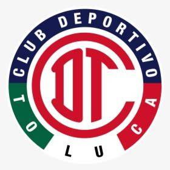

Los Diablos volvieron a vencer a los Felinos desde el manchón penal, ahora en torneo de confederación

Los encendidos Knicks se enfrentarán a los emergentes Spurs en las Finales de la NBA, que arrancan el miércoles en ESPN; nuestros expertos analizan la serie.
La boricua Amanda Serrano igualó el récord de más victorias por nocaut en el boxeo femenino.